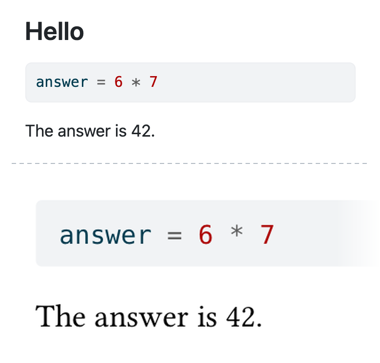

4 Preparar tu computadora
Quarto, publicación reproducible, agentes de programación, Markdown, Python, EPUB, análisis de datos, k-means
Este capítulo termina con un número: 42, impreso en una página web y en un PDF que construyó tu propia computadora. Llegar ahí demuestra que el agente, Python, Quarto y Typst funcionan juntos. Eso es todo lo que necesitan las partes prácticas, porque todo lo que pasa en ellas ocurre en tu máquina: el agente escribe archivos en tus carpetas, Quarto los renderiza ahí y tú abres los resultados en tu propio navegador y en tu procesador de texto. Son seis pasos, y cada uno termina con una comprobación que puedes ver, así que siempre sabes si un paso funcionó antes de seguir.
Haz la preparación en un lugar tranquilo, con buena conexión, y calcula una hora. Si usas Mac o Linux, puedes seguir este capítulo de corrido. Si usas Windows, primero instalas Ubuntu, una versión de Linux, dentro de Windows con WSL, el Subsistema de Windows para Linux; el Apéndice A lo explica paso a paso, y a partir de ahí sigues este capítulo dentro de Ubuntu.
- Instalar Git, un agente de programación, Quarto, uv y
gh, revisando cada paso antes del siguiente. - Moverte por la terminal, y distinguir, al escribir, la terminal del agente.
- Ejecutar la comprobación de la preparación y leer su informe.
- Renderizar un documento de prueba en HTML y en PDF, y confirmar que los dos dicen 42.

4.1 Antes de empezar
Seis pasos, y cada uno termina con una comprobación que puedes ver:
| Paso | Funcionó cuando |
|---|---|
| 1. Deja lista la computadora | git --version imprime una versión |
| 2. Muévete por la terminal | tras cd ~, el indicador muestra ~ |
| 3. Instala un agente de programación | responde, con sesión iniciada |
| 4. El agente instala las herramientas | imprime todas las versiones |
| 5. Ejecuta la comprobación | cada comprobación informa OK |
| 6. Haz la prueba | el PDF dice 42 |
Antes del paso 1, asegúrate de esto:
Casi cada paso descarga algo, y el agente le envía cada solicitud a su modelo por internet, así que una conexión débil se nota como pausas, tiempos de espera agotados e instalaciones a medias que parecen errores tuyos. Usa una conexión por cable o un Wi-Fi fuerte. Evita una VPN, una red privada virtual que envía tu tráfico a través de otra red, cuando puedas; en una red de empresa, un proxy, un servidor por el que debe pasar todo el tráfico web, puede bloquear las descargas.
Una cuenta gratuita de GitHub, para publicar en las partes prácticas, y una cuenta con un agente de programación, que puede no ser gratuita: Claude Code, por ejemplo, necesita un plan de pago o facturación por uso. El Apéndice K enumera lo que acepta cada agente. El registro y la verificación del correo pueden tardar horas, así que hazlos primero.
Una cuenta personal de Google puede usar Antigravity en su nivel gratuito, con una cuota que se renueva cada semana, y OpenCode ofrece modelos gratuitos por tiempo limitado una vez conectada una cuenta de OpenCode, y la lista cambia de una semana a otra. Ninguna de estas rutas se probó con los prompts de este libro; lee antes las condiciones de cada una, porque algunas guardan lo que envías (Sección 16.1).
Una clave de API es una cadena secreta que identifica tu cuenta ante la interfaz de programación del proveedor, que cobra cada solicitud; mantenla fuera de los archivos que compartes. Fija primero un límite mensual: una cuenta de Claude Console puede limitar el gasto mensual de Claude Code con un límite de gasto del espacio de trabajo, y una organización o un proyecto de la API de OpenAI puede fijar un límite estricto de gasto mensual, después del cual las solicitudes se detienen.
En una laptop de trabajo bloqueada, o en una computadora con Windows donde no se permite WSL, usa en su lugar el entorno ya preparado del taller en tu navegador (Sección 4.8) y sáltate los pasos 1 y 4.
Con cualquier ruta, elige un modelo mediano con esfuerzo medio (Sección 2.2), y empieza una conversación nueva para cada tarea (Sección 2.3).
Un plan para cuando un paso falle. Los errores durante la preparación son normales: cada paso depende de tu sistema, de tu red y de las versiones de esa semana, así que un error no significa que hayas fallado. Te dice qué corregir:
- Busca el mensaje en el Apéndice D, cuya tabla de la preparación enumera fallas vistas en la práctica, con soluciones probadas.
- Si no está ahí, pregúntale a un chat web en tu navegador (Claude, ChatGPT y Gemini tienen cada uno un plan gratuito), no al agente, que puede ser lo que falló. Pega el comando, el mensaje de error completo, tu sistema (“Mac”, o “Windows con Ubuntu en WSL”) y el paso en el que estás.
- Prueba una solución sugerida a la vez, y lee cada comando sugerido antes de ejecutarlo. Nunca pegues contraseñas, claves ni datos privados.
- Si fallan dos sugerencias, pregúntale a una persona: el canal de ayuda de tu grupo o alguien de tu equipo.
Los costos, las rutas gratuitas, los límites de gasto y los chats web gratuitos de arriba se consultaron en el periodo 2026-11-12 a 2026-11-20; el Apéndice K tiene la fuente de cada uno.
4.2 Paso 1: deja lista la computadora
Los pasos siguientes dan por sentado dos programas pequeños: git, para el control de versiones, y curl, que descarga un archivo desde una dirección web. Abre una terminal, la ventana para escribir comandos que explica el paso 2 (en una Mac: Comando-Espacio, escribe Terminal, Enter; en Ubuntu: Ctrl+Alt+T), y ejecuta la línea de tu sistema.
En una Mac, instala las Command Line Tools de Apple, que incluyen git:
xcode-select --installUn cuadro de diálogo te pide instalarlas: haz clic en Install y espera. Hacerlo a propósito ahora importa, porque si no, el cuadro aparece la primera vez que algo usa git, que sería en medio del paso 4, mientras el agente espera. Si dice que ya están instaladas (“already installed”), está bien.
En Ubuntu o Debian (incluido Ubuntu en Windows):
sudo apt update && sudo apt install -y curl gitapt es el gestor de paquetes de Ubuntu, el programa que instala software de la colección propia de Ubuntu y lo mantiene al día; apt update actualiza su lista, y apt install instala. sudo ejecuta un comando como administrador y te pide tu contraseña de Linux, que no se ve mientras la escribes. En otras distribuciones de Linux, instala curl y git con tu gestor de paquetes de siempre. En Windows, sigue primero el Apéndice A: termina con este mismo comando, ejecutado dentro de Ubuntu.
4.3 Paso 2: muévete por la terminal
El resto del libro ocurre en una terminal, una ventana en la que escribes comandos en lugar de hacer clic. Cuando está lista para un comando, muestra un indicador, una línea que termina en $ (o en % en una Mac) y que te dice quién eres y dónde estás (en inglés se le llama prompt, pero no hay que confundirlo con el prompt que le das a un agente):
ana@laptop:~/demo$ana es el usuario, laptop la computadora y ~/demo la carpeta actual: ~ es tu carpeta personal, así que esta es una carpeta llamada demo dentro de ella. Ocho comandos bastan para moverte (pwd es la abreviatura de print working directory, imprimir el directorio de trabajo):
| Comando | Hace |
|---|---|
pwd |
imprime la carpeta actual |
date |
imprime la fecha y la hora |
ls |
enumera esta carpeta |
mkdir name |
crea una carpeta |
cd name |
entra en una carpeta |
cd .. |
sube una carpeta |
cd ~ |
va a tu carpeta personal, desde donde sea |
rmdir name |
elimina una carpeta vacía |

/tmp/home/ana; la tuya es /home/<you> en Linux y Windows, o /Users/<you> en una Mac.
La Figura 4.2 los ejecuta en orden. Escríbelos tú en lugar de pegarlos: las manos recuerdan.
Dos teclas evitan la mayoría de los errores de tecleo: Tab completa el nombre de un archivo o de una carpeta, y la flecha hacia arriba trae de vuelta el comando anterior. Copiar y pegar funciona distinto en una terminal: selecciona el texto, y luego Ctrl+Shift+C copia y Ctrl+Shift+V pega (Comando-C y Comando-V en una Mac), porque Ctrl+C solo detiene el programa que está corriendo (Teclas de la terminal). Dos comandos inician la mayoría de los proyectos de este libro, una línea cada uno:
mkdir -p london-guide
cd london-guideEl primero crea la carpeta, y -p hace que mkdir acepte sin quejarse una carpeta que ya existe, así que ejecutarlo dos veces no hace daño. El segundo entra en ella. Los capítulos siguientes suelen unir las dos líneas en una con &&, que significa “y luego, si eso funcionó”:
mkdir -p london-guide && cd london-guideSi mkdir falla, cd no se ejecuta. El Apéndice B tiene más teclas y hábitos.
4.4 Paso 3: instala un agente de programación
Elige un agente y ejecuta su instalador, el comando que documenta su proveedor (Lecturas adicionales enlaza cada página). Ejecuta solo la línea de tu agente.
Claude Code:
curl -fsSL https://claude.ai/install.sh | bashCodex:
curl -fsSL https://chatgpt.com/codex/install.sh | shAntigravity:
curl -fsSL https://antigravity.google/cli/install.sh | bashOpenCode:
curl -fsSL https://opencode.ai/v2/install | bashcurl … | bash descarga un pequeño script de instalación y lo ejecuta de inmediato. Es lo normal con estas herramientas, y también es exactamente por qué solo deberías hacerlo con enlaces de confianza, como el comando documentado de cada proveedor.
Luego abre una pestaña nueva de la terminal (Ctrl+Shift+T en Ubuntu, Comando-T en una Mac, Ctrl+Shift+D en Windows Terminal). Una terminal aprende dónde están los programas cuando arranca, a partir de su PATH, la lista de carpetas en las que busca programas, así que no puede encontrar uno que se instaló hace un momento, que es la causa habitual de command not found justo después de una instalación. En una Mac, una pestaña nueva no alcanza para Claude Code: su instalador lo pone en ~/.local/bin, una carpeta que el PATH no incluye, e imprime la solución bajo “Setup notes”. Pega esa solución en la terminal, presiona Enter y luego abre la pestaña nueva.
Inicia el agente en una carpeta nueva. Escribe las tres líneas una por una: crea la carpeta setup en tu carpeta personal (-p: sin quejas si ya existe), entra en ella e inicia el agente:
mkdir -p ~/setup
cd ~/setup
claudeEsa última línea inicia Claude Code; escribe codex para Codex, agy para Antigravity u opencode para OpenCode. OpenCode no te pide iniciar sesión: escribe /connect dentro de él y elige un proveedor. Por defecto, no pregunta antes de editar archivos ni de ejecutar comandos (Sección 2.4). Para que pregunte, agrega a opencode.jsonc reglas con el efecto ask para sus acciones edit y shell, como muestra su documentación de permisos.
Una página ofrece la elección dentro del comando: claude # or codex. En un script, todo lo que va después de # es un comentario. Escrito en zsh, la shell predeterminada de la Mac, no lo es: zsh le pasa #, or y codex a claude como argumentos. Por eso cada comando de este libro va solo en su línea, y una elección, de sistema o de agente, se hace en la oración que lo acompaña.
El primer arranque pasa por tres pantallas, que se muestran abajo tal como se capturaron de Claude Code 2.1.319 en noviembre de 2026; la redacción cambia entre versiones. Antes de ellas, Claude Code te pide un estilo de texto: presiona Enter para quedarte con el seleccionado. Las pantallas están en inglés.
Inicia sesión. Elige la opción de tu cuenta: la primera para una suscripción, la segunda para una cuenta de Anthropic Console que se factura por uso de la API. El agente abre tu navegador; donde no hay uno, como en WSL, imprime un enlace para copiar en tu navegador, y luego un código para pegar de vuelta en la terminal. La primera pantalla de Codex ofrece “Sign in with ChatGPT”, que funciona igual, y “Sign in with Device Code”, un código de un solo uso para cuando falla el inicio de sesión en el navegador.
Select login method:
❯ 1. Claude account with subscription · Individual, Team, or Enterprise
2. Anthropic Console account · API usage billing
3. 3rd-party platform · Amazon Bedrock, Microsoft Foundry, Google Vertex AIConfía en la carpeta. El cursor empieza en “No, exit”, así que si presionas Enter de inmediato, sales. Presiona primero la flecha hacia abajo. Salir por error no hace daño: vuelve a escribir claude. Codex no pregunta nada en una carpeta simple como ~/setup; hace la misma pregunta más adelante, en un proyecto que es un repositorio de Git. La pantalla de abajo está recortada en el …, donde explica en quién confiar.
Accessing workspace:
/home/ana/setup
Quick safety check: Is this a project you created or one you trust?
…
Claude Code'll be able to read, edit, and execute files here.
❯ No, exit
Yes, I trust this folder
Enter to confirm · Esc to cancelListo. El agente muestra su versión, el modelo y el plan de la cuenta con la que iniciaste sesión, y la carpeta, y luego espera un prompt en la línea marcada con ❯. En esta captura se omitió el logo junto a las primeras líneas, y el modelo y el plan son los de la cuenta que la capturó; la tuya muestra los tuyos.
Claude Code v2.1.319
Opus 5.5 with xhigh effort
Claude Max
~/setup
────────────────────────────────────────────────────
❯ Try "write a test for <filepath>"
────────────────────────────────────────────────────4.4.1 Dos lugares para escribir
Ahora que hay un agente instalado, hay dos lugares para escribir, y confundirlos le cuesta a quien empieza más tiempo que cualquier otra cosa.
ana@laptop:~/setup$ pwd <- the terminal: commands
❯ Which tools are missing? <- the agent: requests in plain languageLa primera línea es la terminal, donde van los comandos; la segunda, el agente, donde van las solicitudes en lenguaje natural. El agente toma el control de la pestaña de la terminal en la que corre: lo que escribes ahí le llega al agente, no a la shell, el programa detrás de la terminal que ejecuta tus comandos, hasta que sales con /exit (en OpenCode, que no lo tiene, Ctrl+C con su prompt vacío). Los comandos de los recuadros Tú haces de este libro, como quarto preview, van en la terminal; los prompts de los recuadros Pídele a tu agente van al agente. Cuando el agente está ocupado y necesitas la terminal, abre una segunda pestaña, como después de la instalación.
Escribir en el lugar equivocado suele ser inofensivo: un prompt escrito después de $ da command not found, y un comando escrito en el agente se lee como una solicitud. Mira en qué línea estás e inténtalo otra vez.
El agente está corriendo y el libro dice que escribas gh auth login, el inicio de sesión en GitHub del paso 5. ¿Dónde lo escribes?
En una segunda pestaña de la terminal: gh auth login es un inicio de sesión interactivo que te necesita a ti, y el agente está usando la primera pestaña. Salir del agente con /exit también funciona, pero termina la conversación.
4.5 Paso 4: deja que el agente instale las herramientas
Las herramientas que faltan son el propio Quarto, uv y la herramienta de línea de comandos de GitHub, gh; el prompt vuelve a revisar git y curl, del paso 1. Cada una tiene su propio método oficial de instalación para cada sistema, que es exactamente el tipo de detalle que un agente maneja bien. Inícialo otra vez en la carpeta de la preparación, ahora en una sola línea unida con && (con codex, agy u opencode en lugar de claude si ese es tu agente, aquí y en los pasos siguientes):
mkdir -p ~/setup && cd ~/setup && claudeRevisa cuáles de `git`, `curl`, `uv`, `quarto` (1.10 o más reciente) y la CLI de GitHub `gh` faltan en esta computadora. Instala solo esos, con el método oficial de cada herramienta para mi sistema. Nunca ejecutes por tu cuenta `sudo` ni un instalador que pida una contraseña: imprime cada uno de esos comandos solo, en un bloque de código, con rutas completas, y espera hasta que te diga listo. Luego imprime todas las versiones.instala uv con su instalador oficial · Quarto desde su página de versiones (o con Homebrew, un gestor de paquetes para la Mac, si lo tienes) · gh desde el repositorio de paquetes de GitHub · imprime las versiones
Antes de cada comando que quiere ejecutar, el agente se detiene y pregunta, como en la Figura 2.4: lee el comando (el recuadro de error frecuente de la Sección 2.9 dice qué buscar) y luego apruébalo.
El prompt está escrito en torno a una limitación: un agente no puede escribir tu contraseña. Por eso le pide al agente que te devuelva cualquier comando que la necesite, con rutas completas, porque la segunda pestaña en la que lo pegas empieza en tu carpeta personal. Copia el comando (Ctrl+Shift+C, o Comando-C en una Mac), pégalo en una segunda pestaña, escribe tu contraseña cuando sudo la pida (no se ve) y luego escribe listo en la pestaña del agente. En una Mac, la contraseña es la de tu sesión.
Quarto no tiene un paquete de Ubuntu en los repositorios estándar, y GitHub desaconseja el paquete gh propio de Ubuntu, así que un apt install genérico instalaría mal una herramienta y le faltaría la otra. La frase del prompt “el método oficial de cada herramienta” manda al agente a la fuente correcta para cada una (la página de descarga de Quarto y las instrucciones de instalación de GitHub para Linux).
El agente instaló uv. En una pestaña de la terminal que abriste antes de eso, escribes uv --version y la terminal responde command not found. ¿Falló la instalación?
Probablemente no. El instalador de uv lo pone en ~/.local/bin, que una terminal agrega a su PATH solo cuando arranca, así que una pestaña abierta antes no lo encuentra. Abre una pestaña nueva e inténtalo otra vez; solo si falla ahí, la culpa es de la instalación.
4.6 Paso 5: ejecuta la comprobación de la preparación
Abre una pestaña nueva e inicia otra vez el agente, para que vea las herramientas recién instaladas:
cd ~/setup && claudeImprime las versiones de `quarto` (1.10 o más reciente), `uv`, `gh` y de este agente, y ejecuta `quarto check` (si todavía no hay Jupyter ni LaTeX, está bien: cuéntalo como OK). Si `git config --global user.name` o `user.email` no están configurados, pídeme mi nombre y mi correo de GitHub y configúralos. Clona https://github.com/project-delphi/quarto-workshop.git en `~/quarto-workshop` (si ya existe, haz `git pull` solo si su árbol de trabajo está limpio) y enumera su `checkpoints/`. Ejecuta `gh auth status`. Ejecuta todas las comprobaciones aunque alguna falle, y luego informa cada una como OK o no.Tres partes de esta comprobación merecen un comentario.
quarto check informa sobre los componentes propios de Quarto, incluidos Pandoc y Typst. Sus líneas de Python y Jupyter pueden decir que faltan, y no pasa nada: cada proyecto de este libro recibe su propio entorno de Python de uv, así que no hay nada que instalar para Python por ahora. Tampoco hace falta LaTeX, porque los PDF se hacen con el motor Typst que viene con Quarto.
Un Git recién instalado no tiene identidad, y git commit se niega a ejecutarse sin una. El prompt hace que el agente te pida tu nombre y tu correo, así que los escribes tú; revisa que lo que configuró sea tuyo y no un valor de relleno.
Clonar es copiar un repositorio, con su historial, a tu computadora: en este caso el del taller, en ~/quarto-workshop. Contiene los ejemplos terminados, el conjunto de datos del agua, el informe inicial del Capítulo 5 y los puntos de control: instantáneas de cada proyecto al final de cada bloque práctico, que vas a usar para ponerte al día si te quedas atrás.
si gh no dice “Logged in”: en una segunda pestaña, gh auth login → GitHub.com → HTTPS → Yes → inicia sesión con un navegador web; copia el código de un solo uso en github.com/login/device; luego pídele al agente que vuelva a revisar gh
4.7 Paso 6: la prueba
La comprobación de la preparación demuestra que las herramientas están instaladas. La prueba demuestra que funcionan juntas: el agente puede escribir un archivo y ejecutar los comandos que apruebas, uv puede construir el entorno de un proyecto, Quarto puede ejecutar Python a través de él y Typst puede escribir un PDF.
mkdir -p ~/quarto-test && cd ~/quarto-test && claudeEjecuta `uv init --bare` y `uv add ipykernel nbclient nbformat pyyaml`. Crea hello.qmd (formatos html y typst): una celda de Python que calcule `6 * 7` y una oración con código en línea que lo muestre. Renderízalo con `uv run quarto render hello.qmd`; comprueba que hello.html y hello.pdf digan 42.uv init --bare · uv add … · escribe hello.qmd · uv run quarto render hello.qmd → hello.html, hello.pdf
/exit, luego abre la carpeta: open . (Mac), xdg-open . (Linux) o explorer.exe . (WSL), y abre los dos archivos
Su archivo es el que mostró la Sección 1.2. La prueba es una comprobación de que las herramientas funcionan juntas, no una lección: no necesitas entender el archivo para pasarla.
Cada renderizado imprime una línea como [IPKernelApp] WARNING | Kernel is running over TCP without encryption. Es inofensiva: Quarto habla con el kernel de Python, el proceso de Python en ejecución que ejecuta las celdas, a través de una conexión local en tu propia computadora, y en cada prueba la advertencia vino con un renderizado exitoso y no cambió nada en la salida.
4.8 Sin instalar nada: un codespace
Un codespace es una computadora que GitHub ejecuta por ti y que abres en tu navegador: una terminal, un explorador de archivos y un editor, sin nada instalado en tu propia máquina. El repositorio del taller describe uno en un archivo de contenedor de desarrollo (dev container), .devcontainer/devcontainer.json, que enumera lo que hay que instalar: Quarto 1.10.20, uv, Git y la CLI de GitHub. Así que, en un codespace, los pasos 1 y 4 ya están hechos.
en github.com/project-delphi/quarto-workshop: Code → Codespaces → Create codespace on main · espera mientras se construye · luego, en su terminal, cd ~
GitHub clona el repositorio en la carpeta /workspaces del codespace, y el archivo del contenedor de desarrollo lo enlaza en tu carpeta personal como ~/quarto-workshop, así que cada ruta de este libro funciona sin cambios. Desde ahí, sigue en la terminal del codespace el paso 2, el paso 3 con el comando de Linux del agente, el paso 5 y el paso 6. Tres cosas cambian respecto de una computadora propia:
- Las vistas previas. Inícialas con
quarto preview --port 4848 --host 0.0.0.0 --no-browser; el codespace ofrece abrir la página en una pestaña nueva del navegador. - El inicio de sesión en GitHub. Si
gh auth logindice queGITHUB_TOKENestá en uso, ejecuta primerounset GITHUB_TOKEN: el token propio del codespace solo llega al repositorio del taller, no a los repositorios que crees tú. - El costo. Una cuenta personal gratuita de GitHub incluye 120 horas de cómputo de Codespaces al mes, que en la máquina predeterminada de dos núcleos cuentan doble, o sea unas 60 horas de uso, y 15 GB de almacenamiento. Detén el codespace cuando termines (la página Codespaces lo enumera), porque uno en ejecución consume la cuota.
El entorno se construyó a partir de su archivo de contenedor de desarrollo y se revisó en una computadora local; no se probó en un codespace de GitHub (qué no se probó en esta edición).
La cuota del codespace se consultó el 2026-11-18; el Apéndice K tiene la fuente.
Resumen
- Todo lo de las partes prácticas ocurre en tu propia máquina, así que la preparación demuestra que el agente, Python, Quarto y Typst funcionan juntos ahí.
- Cada paso termina con una comprobación que puedes ver; sigue adelante solo cuando se cumple.
- Los comandos van en el indicador de la terminal y las solicitudes, al agente; cuando el agente está ocupado, abre una segunda pestaña.
- Una terminal solo encuentra los programas que conocía cuando arrancó, así que, después de una instalación, abre una pestaña nueva antes de sospechar de la instalación.
- El agente no puede escribir tu contraseña: te devuelve los comandos que la necesitan, y tú lees cada comando antes de aprobarlo.
- Cuando un paso falla, busca en el Apéndice D, luego pregúntale a un chat web con el comando y el error completo, una solución a la vez, y nunca pegues secretos.
La prueba fue una caja negra: un archivo que no escribiste, una configuración que todavía no conoces, código que no leíste. El Capítulo 5 pone en tus manos un informe real antes que en las de cualquier agente: lo renderizas tú, encuentras su número equivocado y lo registras con Git. Luego la Parte II explica lo que había en la caja, y construye la guía de Londres un elemento de Markdown a la vez.
Lecturas adicionales
- Quarto, Get Started y página de descarga (consultados el 2026-10-30).
- Astral, Installing uv (consultado el 2026-10-30).
- GitHub, GitHub CLI e instalación en Linux (consultados el 2026-10-30).
- Preparación de Claude Code, Codex CLI y Antigravity CLI (consultados el 2026-10-30), y OpenCode (consultado el 2026-11-20): el comando de instalación de cada agente.
- Claude Code, solución de problemas de instalación, sobre el PATH de la Mac (consultado el 2026-11-06).
- OpenCode, permisos: las reglas que hacen que pregunte antes de actuar (consultado el 2026-11-20).
- Scott Chacon y Ben Straub, Pro Git, Installing Git (consultado el 2026-11-06).